20 candidates for Emmet's technique library (session 3D, H-26). Each was found in your instruction books and ranked by how widely official models in the LDraw OMR join its key parts (1315 sets mined). Each picture is a render of my sketch of it in Emmet's DSL, which validates with no findings; an accepted sketch becomes the technique, with its tests and render, and a rejected one is dropped. Nothing is taken from the models' files or the books' pages (D-48). Every candidate starts as Accept: switch the ones you don't want, add a note if it helps, then copy your answers and paste them to Claude.
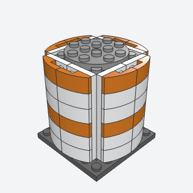
stave_cylinderA smooth round column about 6 studs across, four staves of curved slopes clipped round a core with studs on all four sides.
A big smooth round column, rocket stage, tank, or silo 6 studs across, where round bricks are too small and a brick-built polygon too jagged.
Note: The core is fixed at 4 x 4, so the section is 6.4 studs across; 8 to 12 needs wider staves (61678 4 x 1 curved slopes) and reads squarer. Side studs sit 1.75 plates up a brick, so the staves stand half a plate above the core.
x, y, z, units, color, core, band, band_everybatch-18/stave_cylinder.py4733 + 11211 + 11477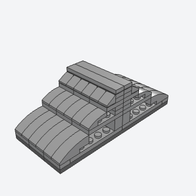
stepped_curve_hullA hull side that curves in as it rises, a contour stack of plate layers each set in from the one below, every layer's edge finished with a curved slope so the steps read as one smooth sweep.
A display hull's shoulder or a curved upper deck that should read as one smooth curve, not stair steps.
Note: Builds only the convex half (curving in as it rises); the book's S-curve also turns vertical on side-stud bricks and hinges its upper part, which this doesn't.
x, y, z, length, steps, facing, colorbatch-18/stepped_curve_hull.py61678 + 11477 + 50950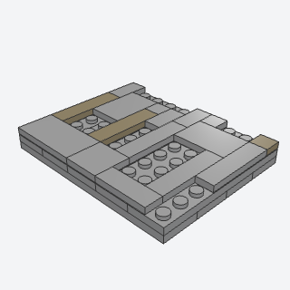
bare_stud_greebleA hull surface tiled about 70 percent smooth, with small irregular patches of bare studs and a few dark seams, so it reads as busy plating with no greebles bolted on.
Any big flat surface of a display ship or station, so it reads as busy plating with no bolted-on greebles.
Note: VARIANT of greeble_strip: an area version, tiles and seeded bare patches on top studs instead of details on side studs.
x, y, z, length, depth, bare, seed, color, seam, seamsbatch-18/bare_stud_greeble.py87079 + 3068b + 3069b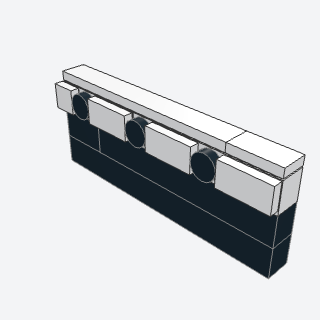
porthole_bandA clean, smooth band along a ship's side, with a row of round portholes set flush in it.
A clean white band of round portholes on a ship's upper hull, above the dark lower courses.
Note: VARIANT of portholes: round tiles flush in a band of tiles on side studs, instead of Technic bricks in the course.
x, y, z, length, spacing, facing, color, glassbatch-18/porthole_band.py11211 + 87087 + 98138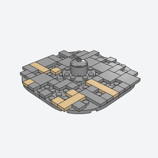
saucer_petal_panelsA round disc 12 studs across whose top is broken into tiled panels with radial seams and a few bare patches, like the plating of a display saucer, round a small domed hub.
The top of a saucer or any round flat deck, panelled with radial seams and a few bare patches round a hub dome.
Note: Grid-friendly fallback: four 6 x 6 plates with a round corner make the disc and radial tiling makes the petals; the book's wedge-plate petals tilted a few degrees on hinges aren't built.
x, y, z, bare, seed, color, seam, seams, hubbatch-18/saucer_petal_panels.py6003 + 60474 + 87079 (some of its parts weren't confirmed from the book; I'd pin them when writing it)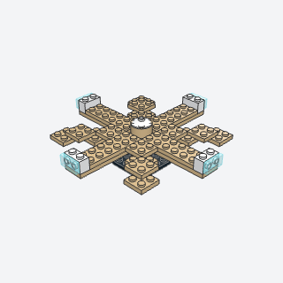
radial_spoke_saucerThe frame of a big flat disc that stays rigid without a baseplate, eight spliced spokes of plates from a hub, with a lit window block at the tip of each straight spoke.
The rigid frame under a big flat disc (a saucer, a landing pad, a round deck) with lit window blocks at the rim.
Note: Four straight spliced spokes and four stepped diagonal ones; the book's eight true radial spokes need 45 degree turns.
x, y, z, reach, color, rim, glassbatch-18/radial_spoke_saucer.py3795 + 3022 + 11211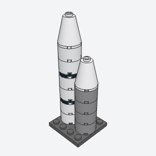
axle_round_stackA thin round booster, tank, or pole, 2 x 2 round bricks threaded on a Technic axle, with dark round plates as bands and a cone for a nose.
Thin round boosters, tanks, masts, and poles up to 2 studs across that must stay straight.
Note: The axle goes in its own step after the stack (slid down from the top before the nose). The validator accepted the axle through the round bricks' axle holes.
x, y, z, bricks, band_every, color, band, nosebatch-18/axle_round_stack.py3941 + 4032a + 3707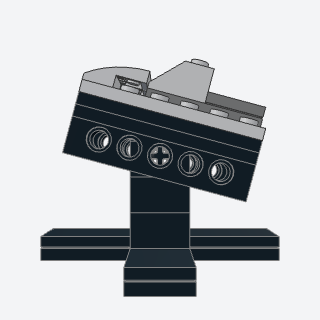
angled_display_standA low black stand that holds a model nose-up at 10 to 20 degrees on a cradle pinned to a short pylon, so the model looks in flight and lifts off.
Every display ship or flyer: a low black stand that shows it nose-up in flight and lets it lift off.
Note: The cradle turns by any angle on a Technic axle 4 through the pylon; it's placed with a small helper that finds the footprint corner so the rail's middle hole lands on the axle, and the validator accepted the joint at 15 degrees. Simplified from the book: a plate cross with no wedge taper and no diagonal brace. The model goes in as a submodel (ship=).
x, y, z, angle, length, ship, colorbatch-18/angled_display_stand.py3700 + 3894 + 3705 (some of its parts weren't confirmed from the book; I'd pin them when writing it)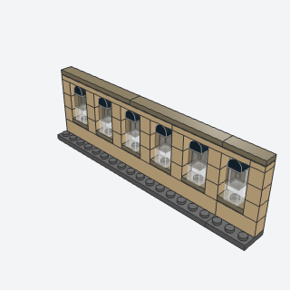
lancet_windowA row of tall round-headed Gothic windows at midi scale, each a 1-wide stack of glass centered on a jumper in a 2-stud bay, lit below and dark above, between stone piers.
A Gothic nave or chapel wall at midi scale: rows of tall round-headed windows, lit below and dark above.
Note: VARIANT of window_frame (midi): a 1-wide window centered on a jumper in a 2-stud bay.
x, y, z, bays, stone, sill, lit, dark, headbatch-18/lancet_window.py15573 + 49307 + 3005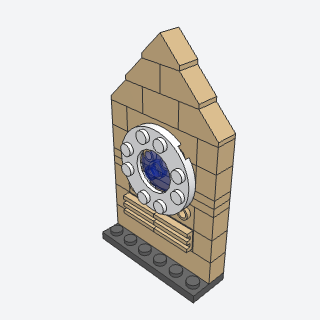
rose_window_ringA big round window in a flat Gothic facade, a ring plate standing on side studs with colored glass flush in its hole, over a gallery of little columns and under a gable.
The big round window in a Gothic west front or transept facade.
Note: A 2 x 2 dish stands in for the book's printed round tile, and a gable of 45 degree slopes for its inverted arch and 1 x 6 arch, which don't make a 4-wide round frame with the parts found.
x, y, z, stone, ring, glassbatch-18/rose_window_ring.py11833 + 30414 + 4740 (some of its parts weren't confirmed from the book; I'd pin them when writing it)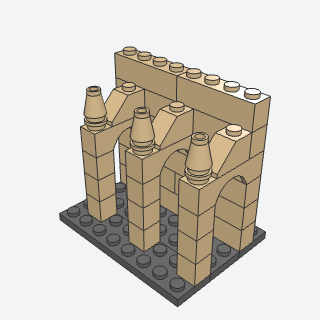
flying_buttress_archA row of flying buttresses at midi scale, each an arch leaping from a slim outer pier to the nave wall, its back sloped up toward the wall and a pinnacle on the pier.
Flying buttresses along a Gothic nave or round an apse, each with a pinnacle on its pier.
Note: REPLACES flying_buttress_bar: the book leans a bar in clips at about 45 degrees; this grid version springs a 1 x 4 arch from the pier to the wall. VARIANT of buttress.
x, y, z, count, spacing, height, stonebatch-18/flying_buttress_arch.py3659 + 3040b + 4589 (some of its parts weren't confirmed from the book; I'd pin them when writing it)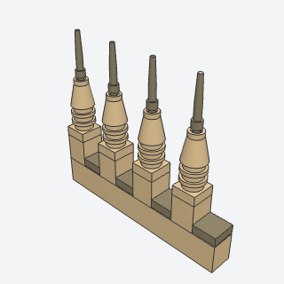
pinnacle_stackSmall pointed Gothic pinnacles, a stack of round plates under a cone and a slim spike, set in rows on buttresses and parapets so the roofline bristles.
Rows of small pointed pinnacles on buttress tops and parapets, the bristling roofline of a Gothic building.
Note: The book's spike wasn't identified; a cone 1 x 1 with a wand in its hollow stud stands in, which the validator accepts as held.
x, y, z, count, spacing, axis, color, spike, finialbatch-18/pinnacle_stack.py4589 + 6141 + 36752a (some of its parts weren't confirmed from the book; I'd pin them when writing it)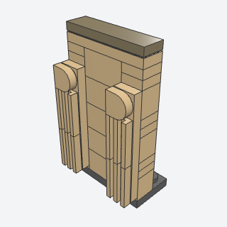
pointed_buttress_stripA slim stone pilaster with fine vertical ribs and a rounded head, standing a plate proud of a tower's face on side studs.
Slim ribbed pilasters up the corners and faces of a Gothic tower.
Note: VARIANT of buttress (flat, on side studs). The head is a 1 x 1 tile with a rounded end; the book's pointed piece wasn't identified.
x, y, z, color, strip, headbatch-18/pointed_buttress_strip.py78329 + 2412b + 87087 (some of its parts weren't confirmed from the book; I'd pin them when writing it)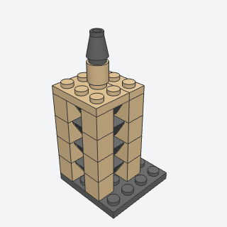
belfry_louversThe slatted openings of a bell tower, a column of bricks with studs on four sides whose side studs carry cheese slopes as slats, so each opening is filled with sloping louvers.
The slatted openings of a bell tower or belfry, at midi scale.
Note: One slat per side stud; the book fits two cheese slopes per side per brick.
x, y, z, slats, faces, colorbatch-18/belfry_louvers.py4733 + 54200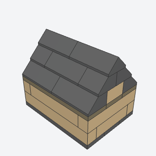
steep_nave_roofA long steep roof of 45 degree slopes built apart as a submodel, its seams staggered course to course, with double slopes along the ridge, set on the walls so it lifts off to show the inside.
A long steep slate roof that lifts off a nave, chapel, or hall to show its floor.
Note: VARIANT of gable_roof plus lift_off_roof_seat, built apart as a submodel; no cross-gable for a transept.
x, y, z, length, width, color, gable, framebatch-18/steep_nave_roof.py3037 + 3041 + 3043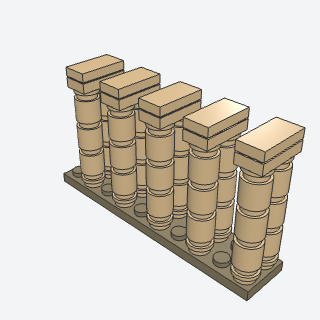
slender_column_capitalRows of thin round columns in twin pairs, each pair joined at the top by a plate and a tile that read as the capital and the springing of the vault, for the inside of a midi-scale hall or nave.
Rows of thin columns inside a hall or nave, carrying the vault.
x, y, z, pairs, bay, height, color, capital, tiledbatch-18/slender_column_capital.py3062b + 6141 + 3069b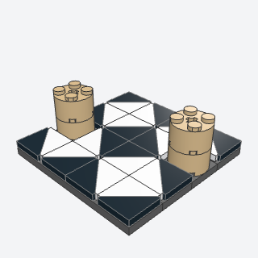
triangle_tile_floorA patterned stone floor of 2 x 2 triangular tiles in two colors, set so the triangles meet in diamonds and stars, for the floor of a hall or a cathedral at midi scale.
A patterned stone floor of diamonds and stars inside a hall or cathedral.
Note: VARIANT of tiled_floor. The triangular tile's body is 1.85 studs square, so each turn has its own seating offset (SEAT); two fit one 2 x 2 cell with no collision.
x, y, z, blocks, inner, outer, open_cellsbatch-18/triangle_tile_floor.py35787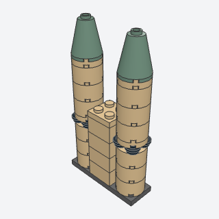
banded_round_turretA slim round corner turret of 2 x 2 round bricks with a dark recessed ring and a slight lip every few bricks, the string courses of a midi-scale tower.
Slim round corner turrets with string-course rings on a midi tower, castle, or civic building.
Note: VARIANT of round_tower (small, banded).
x, y, z, bricks, band_every, color, band, roofbatch-18/banded_round_turret.py3941 + 6141 + 4032a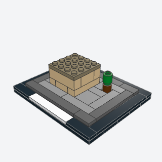
architecture_baseThe finished display base of an architecture model, a dark stepped frame round a tiled ground strip, with a long name tile set in the front edge and bare studs only where the model and its trees stand.
The finished display base under any architecture or midi model: a stepped dark frame, a tiled ground, and a name tile.
Note: The name tile is plain white; the sets use a printed black tile.
x, y, z, length, depth, site, studs, ground, frame, step, name, name_lengthbatch-18/architecture_base.py6636 + 3069b + 3034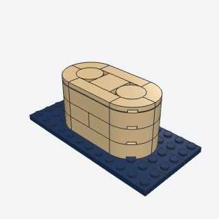
rounded_pier_noseA bridge pier 4 studs wide whose ends are smooth half-rounds, quarter-round bricks round a round core, so the water parts round its nose.
Bridge piers, harbor walls, or any wall end that should be smoothly half-round.
Note: The cap is flat (quarter-round and round tiles); the book domes the nose with curved slopes.
x, y, z, length, courses, both, stone, corebatch-18/rounded_pier_nose.py3063b + 3941 + 27925